Канье Омари Уэст является музыкантом, бизнесменом, музыкальным продюсером, дизайнеом одежды и бывшим миллиардером. На данный момент ему 46 лет, но не смотря на свой возраст он продолжает заниматься музыкой и другими отраслями, в которых он преуспел.Рост Kanye составляет 173 см. Ye родился в городе
Атланта,
расположенном в
штатe Джорджия.
По национальности он афроамериканец.
Kanye West родился 8 июня 1977 года в городе
Атланта,
штат Джорджия.
Его родители развелись, когда ему было три года, после чего Kanye со своей матерью переехали в
Чикаго,
штат Иллинойс.
Его отец, Ray West, состоял в партии
«Чёрных пантер»
и был одним из первых фотожурналистов-афроамериканцев в ежедневной газете
The Atlanta Journal-Constitution.
Партия самообороны «Чёрные Пантеры» – американская леворадикальная организация афроамериканцев, ставившая своей целью продвижение гражданских прав чернокожего населения. Была активна в
США
с середины 1960-х по 1970-е годы.
Kanye учился в средней школе Поларис в Оук-Лон, пригороде Чикаго. На вопрос журналистов о своих оценках в школе, Уэст ответил, что он учился хорошо.
В возрасте десяти лет Ye с матерью переехал в город
Нанкин
в
Китае,
где они жили, пока она работала в
Нанкинском университете
по программе обмена. По её словам, он был единственным иностранным учеником в своём классе, но он быстро влился в коллектив, выучив китайский язык.
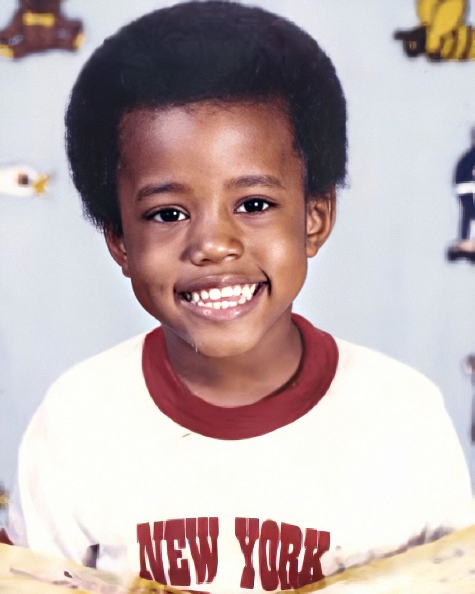
Kanye West в детстве
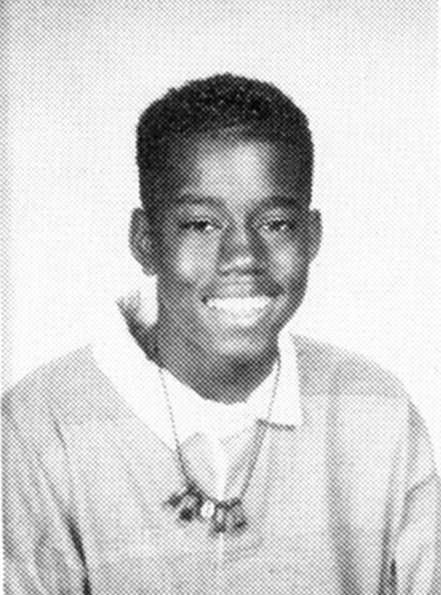
Kanye West в возрасте 16-ти лет
С ранних лет
Ye
проявлял интерес к творчеству. В возрасте пяти лет, возвращаясь с отдыха, он написал стихотворение. По словам его матери, ко-гда он был в третьем классе, она начала замечать его интерес к рисованию и музыке. Сам
Kanye
утверждает, что он хотел разрабатывать компьютерные игры. Его мать подарила ему
компьютер Amiga,
в котором была программа для создания музыки. По его словам, он научился работать с ней чтобы создавать музыку для игр. Живя в Чикаго, он активно участвовал в городском хип-хоп-сообществе. В третьем классе он начал читать рэп, а в седьмом классе – cоздавать инструменталы, которые позже он начнёт продавать другим музыкантам. В возрасте тринадцати лет Уэст написал композицию
«Green Eggs and Ham»
и начал уговаривать свою мать заплатить 25 долларов в час за запись на студии. Мать не могла отказать ему. Вскоре
Kanye
по-знакомился с продюсером
No I.D.,
с которым он быстро подружился.
No I.D.
стал его наставником и научил его работать с
сэмплером.
Окончив школу, в 1997 году он получил стипендию на обучение в
Американской академии искусств,
где он обучался рисованию. Однако вскоре он перешёл в
Государственный Университет Чикаго,
где начал изучать английский язык. В возрасте 20 лет, поняв, что загруженный график обучения мешает ему заниматься музыкой, он бросил обучение. Это очень огорчило его мать, работавшую в данном университете. Она позже скажет:
«Мне всю жизнь вбивали в голову, что колледж – это билет в хорошую жизнь… Но некоторые карьеры не требуют обучения в колледже.
Kanye
, чтобы создать альбом
The College Dropout,
было необходимо иметь силу воли, а не идти по пути, предложенному обществом».
Kanye
начал свою музыкальную карьеру в середине 1990-х, создавая инструменталы для местных музыкантов. В конечном итоге он сформировал свой музыкальный стиль, основой для которого стали ускоренные сэмплы соул-композиций. Первое официальное упоминание
Kanye
встречается на дебютном и единственном альбоме чикагского рэпера
Grav,
Down to Earth,
1996 года, для которого
Kanye
спродюсировал 8 композиций и сам исполнил куплет в композиции
«Line For Line».
Некоторое время
Ye
был тайным продюсером американского продюсера, менеджера и рэпера
D-Dot
. Работая с
D-Dot,
Kanye
не мог вести сольную карьеру, поэтому в конце 1990-х он организовал группу
Go-Getters,
в которую помимо него вошли другие представители чикагской рэп-сцены и по совместительству его друзья:
GLC,
Timmy G,
Really Doe
и
Arrowstar.
В 1999 году
Go-Getters
записали свой единственный альбом,
World Record Holders,
который не был выпущен официально.
Конец 1990-х
Kanye провёл продюсируя альбомы известных музыкантов и групп. Он стал продюсером композиции «My Life» во втором альбоме
Foxy Brown,
Chyna Doll, выпущенном в 1999 году.
Chyna Doll стал первым альбомом женщины-рэпера, дебютировавшим на первой строчке чарта
Billboard 200. Среди альбомов, спродюсированных
Kanye, также были дебютный и единственный альбом группы
Harlem WorldThe Movement и
The Truth рэпера
Beanie Sigel.
В конце 1990-х он также стал продюсером дебютного альбома D-Dot, Tell ’Em Why U Madd, выпущенного им от лица The Madd Rapper — персонажа, впервые появившегося в ските из альбома The Notorious B.I.G. Life After Death.
Tell ’Em Why U Madd не имел коммерческого успеха, но включал в себя куплеты, исполненные малоизвестными на тот момент рэперами
50 Cent и
Eminem.
Успех пришёл к
Kanye в 2000 году, после того, как он начал работать с музыкантами лейбла
Roc-A-Fella Records.
Широкая известность в качестве продюсера пришла к
Kanye после работы над альбомом рэпера
Jay-Z -
The Blueprint.
Музыкальные критики отметили продакшн
Kanye, в то время как сам
Jay-Z называл
Kanye «гением».
The Blueprint называется классикой хип-хопа и был включён в многочисленные списки лучших альбомов, среди которых 500 величайших альбомов всех времён по версии журнала
Rolling Stone и подобный список
журнала NME.
Будучи продюсером
Roc-A-Fella Records,
Kanye работал над альбомами других музыкантов лейбла, среди которых
Beanie Sigel,
Freeway, Cam’ron.
Он также работал над хитами для таких исполнителей, как
Talib Kweli,
Ludacris,
Nas,
T.I. и
Beyoncé.
Альбом Jay-Z - The Blueprint
Kanye West в госпитале после автокатастрофы
23 октября 2002 года
Kanye попал в серьёзную автокатастрофу по пути домой из звукозаписывающей студии в Лос-Анджелесе, заснув за рулём. В результате аварии его челюсть оказалась раздроблена и на неё пришлось наложить проволочную шину. Это вдохновило
Kanye на написание композиции «
Through the Wire», которую он записал через две недели после выхода из госпиталя, ещё со сломанной челюстью. Впервые «
Through the Wire» была выпущена в составе микстейпа
Get Well Soon… в 2003 году. В то же время он сообщил о работе над своим дебютным альбомом «
The College Dropout», главной темой которого стало «принятие своих собственных решений».
Kanye работал над
The College Dropout длительное время, начав ещё в Чикаго, годами сохраняя себе инструменталы. Работу над альбомом
Kanye заканчивал в Лос-Анджелесе, где он проходил реабилитацию. Вскоре после того, как он закончил работу над альбомом, цифровая версия альбома утекла в интернет, за несколько месяцев до релиза. Тогда
Kanye решил значительно переделать альбом, улучшив его качество, добавив в композиции струнные инструменты, госпел-хоры и новые куплеты.
Осенью 2004 года
Kanye West открыл свой собственный лейбл,
G.O.O.D. Music, на который он позже подпишет своих знакомых музыкантов.
Работу над своим вторым альбомом, Late Registration,
Kanye начал в конце 2004 года, закончив свои выступления в рамках концертного тура Ашера. По неподтверждённой информации, на запись альбома ушло около двух миллионов долларов, а сам
Kanye утверждает, что для работы над альбомом он взял в долг 600 000 долларов. Большое влияние на стиль этого альбома оказал концертный альбом группы Portishead Roseland NYC Live. В частности именно благодаря ему он добавил в композиции Late Registration живой струнный оркестр. Сам
Kanye позже признался, что он и раньше хотел сделать нечто подобное, но смог позволить только после успеха своего дебютного альбома. Он также пригласил для работы над альбомом американского композитора
Джона Брайона, который стал сопродюсером нескольких композиций альбома. Это стало неожиданностью для многих фанатов. Несмотря на то, что Брайон до этого не работал с хип-хопом, они с
Kanye быстро нашли общий язык: свою первую композицию, «Gold Digger», они закончили в конце первого рабочего дня.
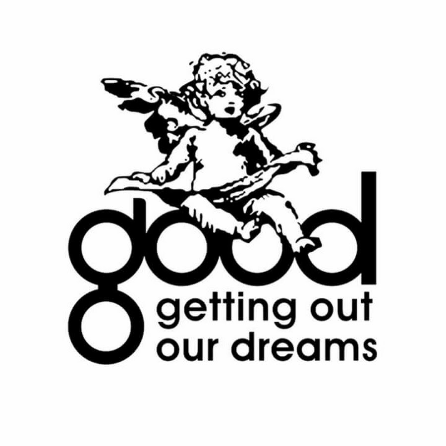
Логотип лейбла G.O.O.D. Music
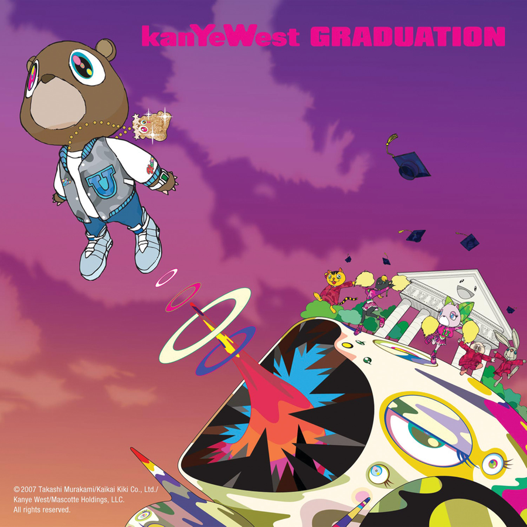
Альбом Kanye West - Graduation
Проведя 2006 год, выступая вместе с группой
U2 на их концертном туре Vertigo Tour,
Kanye West решил записать альбом, композиции которого подходят для выступлений на больших стадионах. Он использовал элементы жанров: электро и диско. Среди источников вдохновения также называются арена-рок-группы, такие как
U2,
The Rolling Stones и
Led Zeppelin. Чтобы сделать свой новый альбом, третий в запланированной тетралогии альбомов, посвящённых обучению, более личным, а также с целью развить навыки повествования,
Kanye слушал фолк и кантри-музыкантов
Альбом, названный Graduation, получил широкое освещение в прессе ещё до своего выхода: его дата релиза совпала с датой выхода альбома
Curtis рэпера
50 Cent, из-за чего пресса устроила противостояние между рэперами. Незадолго до назначенной даты
50 Cent заявил, что закончит свою карьеру, если проиграет. Оба альбома вышли 11 сентября 2007 года. Graduation победил, продавшись за первую неделю тиражом 957 000 экземпляров, против 691 000 у
Curtis.
50 Cent позже обвинил лейбл
Kanye,
Def Jam, в накручивании количества продаж, по его словам лейбл сам скупал альбом.
Вскоре в жизни
Kanye произошли значительные перемены. Через несколько месяцев после релиза Graduation, в ноябре 2007 года, от осложнений после пластической операции умерла его мать,
Donda West. Через несколько месяцев после этого он поссорился со своей возлюбленной, Alexis Phifer, с которой он познакомился ещё в 2002 году и обручился в августе 2006 года. Эти события оказали большое влияние на
Kanye.
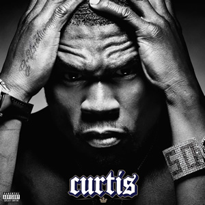
Альбом 50 Cent - Curtis
На
церемонии награждения премии MTV VMA 2008 года он представил свой четвёртый альбом, 808s & Heartbreak, исполнив главный сингл с него, «Love Lockdown». Альбом сильно отличался от предыдущих работ
Kanye. Музыкальные критики отнесли его не к хип-хопу, а к жанрам электропоп и синти-поп. Чтобы передать свои чувства,
Kanye решил прибегнуть к пению и использованию автотюна, что вызвало неоднозначную реакцию у ряда фанатов. Помимо этого при создании альбома широко использовалась драм-машина
Roland TR-808, что также отражено в названии альбома. Среди основных тем альбома - одиночество, отчуждение и чувство вины.
Вскоре
Kanye отправился на Гавайи, где несколько месяцев, практически круглосуточно, работал над своим пятым альбомом. Для работы над альбомом
West пригласил различных музыкантов и друзей, среди которых были
Jay-Z,
Kid Cudi,
Pusha T,
Q-Tip и
RZA, а также достаточно необычные гости вроде Ники Минаж и Джастина Вернона из группы
Bon Iver.
Noah Callahan-Bever, редактор журнала
Complex, также приглашённый в студию, охарактеризовал процесс записи альбома как «коллективный»:
Kanye советовался со всеми приглашёнными музыкантами и спрашивал их мнение.
Альбом, названный My Beautiful Dark Twisted Fantasy, был выпущен 22 ноября 2010 года. Альбом получил восторженные отзывы критиков:
The New York Times назвал его «феноменальным альбомом»,
The Washington Post — «шедевром», а
The Independent — «ярчайшим, наиболее грандиозным альбомом в жанре поп-музыки за последние годы». Альбом попал в многочисленные списки лучших альбомов 2010 года, заняв первое место в 22 из них.
8 августа 2011 года
Kanye West выпустил совместно с
Jay-Z альбом Watch the Throne. Альбом дебютировал на первой строчке
Billboard 200. 14 сентября 2012 года
West выпустил альбом Cruel Summer — компиляцию, состоящую из композиций, исполненных музыкантами созданного им лейбла
G.O.O.D. Music. Альбом дебютировал на второй позиции чарта
Billboard 200.
Kanye также стал режиссёром короткометражного фильма Cruel Summer, впервые показанного в специальном павильоне с семью экранами на Каннском кинофестивале 2012 года.
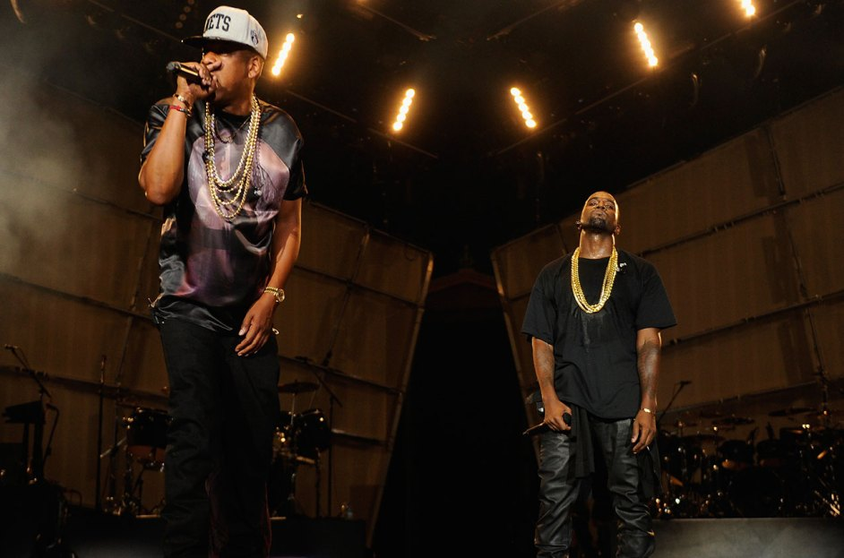
Jay-Z и Kanye West на фестивале OTR Tour
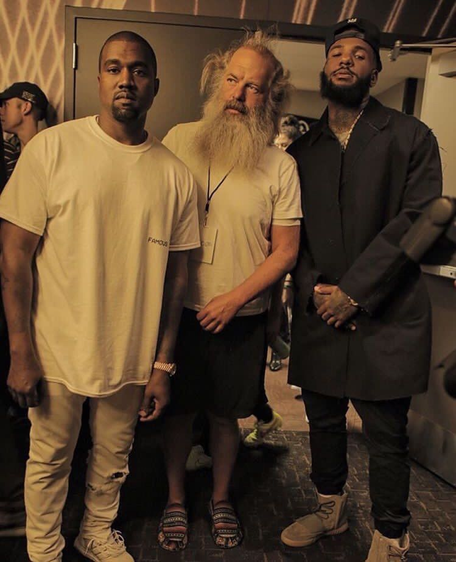
Kanye West, Rick Rubin и The Game во время записи Yeezus
Работу над своим шестым альбомом, названным Yeezus,
Kanye начал в Париже. Задавшись целью «разрушить коммерческую музыку», на Yeezus он совместил элементы чикагского дрилла, эйсид-хауса и индастриала. За несколько недель до релиза
Kanye пригласил продюсера
Рика Рубина, для того чтобы он помог придать альбому минималистичное звучание. Сам
Рубин заявляет, они работали над ним более двух недель по 15 часов в день и что данная задача оказалась «невероятно трудной». В преддверии выхода альбома была проведена рекламная кампания, включавшая в себя видеопроекции композиции «New Slaves» в 66 местах по всему миру и выступления на телевидении. Yeezus вышел 18 июля 2013 года и получил положительные отзывы критиков. Он стал шестым альбомом
Kanye, поднявшимся до первой строчки чарта
Billboard 200.
В ноябре
West объявил, что вместе с
Риком Рубином и
Q-Tip работает над новым альбомом, запланированным к выходу летом 2014 года. В декабре компания
Adidas объявила о выпуске линии одежды, созданной совместно с
Kanye -
Adidas Yeezy.
31 декабря 2014 года
Ye выпустил сингл «Only One», исполненный совместно с
Полом Маккартни.
В январе 2015 года был выпущен сингл
Рианны «FourFiveSeconds», исполненный совместно с
Kanyeи
Полом Маккартни. В феврале
Kanye представил свою совместную с
Adidas линию одежды, названную Yeezy Season 1. Она была показана на нью-йоркской неделе моды. В марте
West выпустил сингл «All Day», исполненный совместно с
Теофилусом Лондоном,
Allan Kingdom и
Полом Маккартни. Он впервые исполнил данную композицию на церемонии вручения премии
BRIT Awards 2015, совместно с рядом американских рэперов и представителей британской грайм-сцены. В сентябре, во время недели моды в Нью-Йорке,
Kanye представил свою вторую коллекцию одежды, Yeezy Season 2, на этот раз созданную независимо от компании
Adidas.
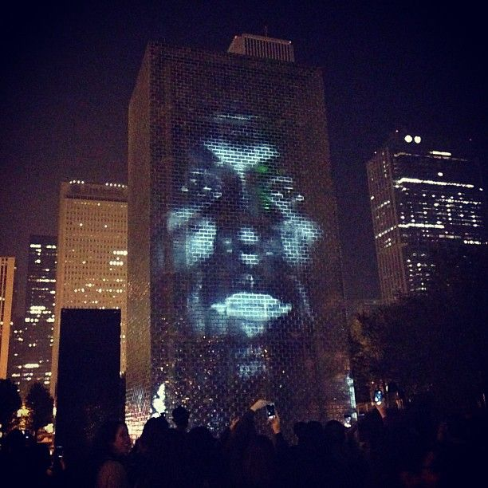
Видеопроекция клипа «New Slaves»
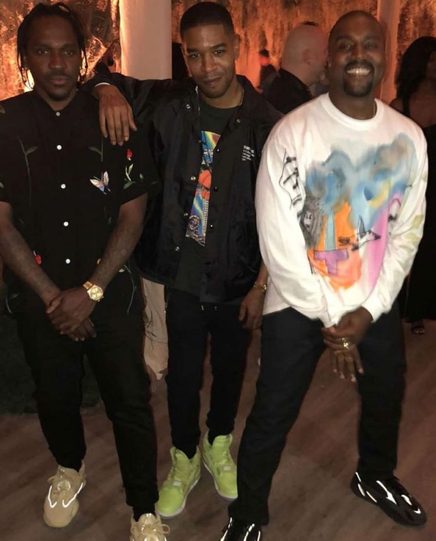
Pusha T, Kid Cudi и Kanye West после выхода альбома Kids See Ghosts
Окончательный вариант названия альбома
West сменил на - The Life of Pablo. Альбом был представлен 11 февраля 2016 года, в
Мэдисон-сквер-гарден, одновременно с показом его новой коллекции одежды Yeezy Season 3. В феврале 2016 года
Kanye сообщил о том, что его новый альбом, названный Turbo Grafx 16 в честь одноимённой игровой приставки, должен выйти летом 2016 года. В июне
Kanye анонсировал вторую компиляцию лейбла
G.O.O.D. Music, названную Cruel Winter, опубликовав первый сингл с неё, композицию «Champions».
В середине 2018 года
Kanye вернулся к написанию музыки. В течение пяти недель выходили альбомы, к которым
Kanye был причастен в качестве автора и продюсера:
Pusha T «Daytona» и совместный проект
Kanye West и
Kid Cudi «Kids See Ghosts».
6 января 2019 года
West начал свою еженедельную оркестровку
Sunday Service, которая включает в себя соул-вариации песен
Kanye и других исполнителей, в которых приняли участие множество знаменитостей, включая
Кардашьян,
Чарли Уилсона и
Kid Cudi.
Kanye West представил новую песню «Water» на своей
Sunday Service, выступление с оркестровкой на фестивале
Coachella 2019, которое, как позже стало известно, войдет в его грядущий альбом Jesus Is King.
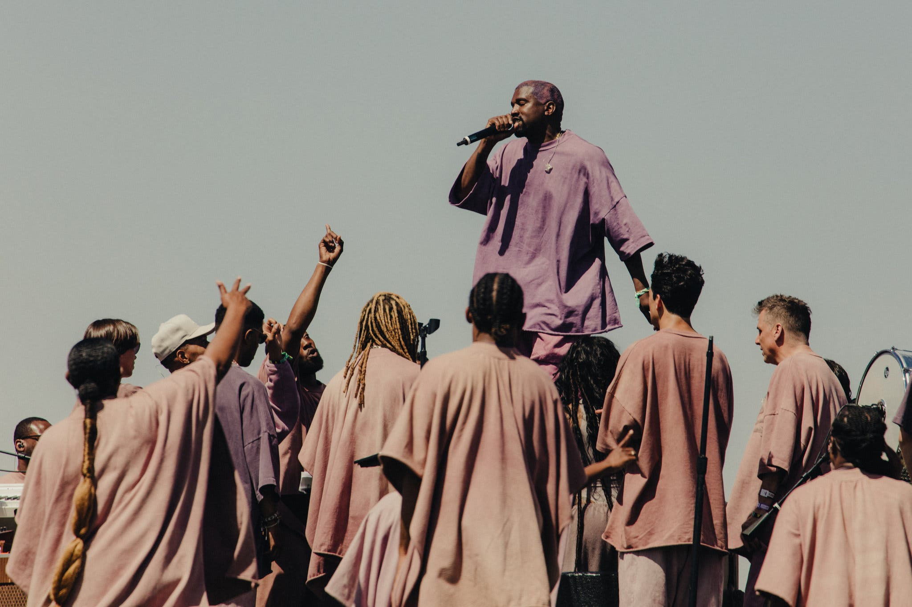
Kanye West на фестивале Coachella 2019
Обложка фильма Jesus Is King
Альбом вышел с премьерой
фильма по мотивам альбома. Он стал первым, кто возглавил
Billboard 200, лучшие R&B/хип-хоп альбомы, Лучшие рэп-альбомы, Лучшие христианские альбомы и лучшие евангельские альбомы одновременно. 25 декабря 2019 года
Kanye West и церковный хор
Sunday Service выпустили госпел-альбом «Jesus Is Born», содержащий 19 песен, включая несколько переработанных старых песен
Kanye. Сам
Kanye West занимался продюсированием и аранжировкой проекта.
30 июня 2020 года
Kanye выпустил сингл под названием «Wash Us in the Blood» с участием американского рэпера
Travis Scott.
Kanye West и Travis Scott в период записи совместной работы
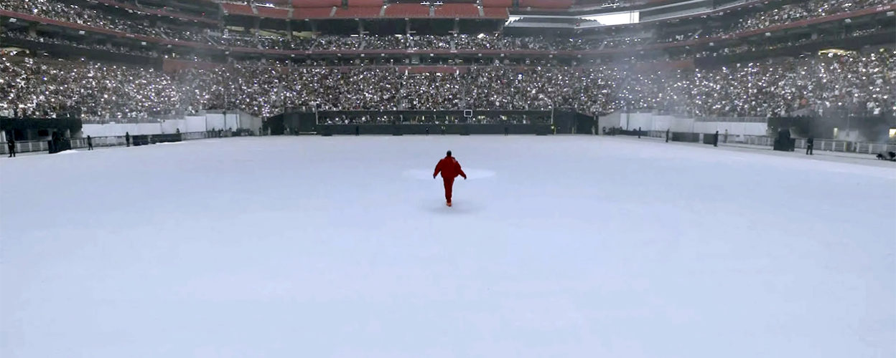
Kanye West на презетации альбома Donda в Mercedes-Benz Stadium
16 октября
Kanye провел несколько концертов на стадионе
Mercedes-Benz Stadium для прослушивания своего предстоящего альбома Donda летом 2021 года, где он временно поселился в одной из раздевалок стадиона, превратив её в студию звукозаписи, чтобы закончить запись. После многочисленных задержек Donda была выпущена 29 августа 2021 года.
Kanye утверждал, что альбом был выпущен досрочно без его одобрения, и утверждал, что
Universal изменила трек-лист. Он выпустил улучшенное издание Donda, включающее пять новых песен, для стриминговых сервисов 14 ноября 2021 года.
15 января
Kanye выпустил первый сингл для своего предстоящего альбома Donda 2, «Eazy» с участием рэпера
The Game, исполнительным продюсером которого выступит
Future.
Kanye организовал мероприятие по прослушиванию альбома в
LoanDepot Park в Майами 22 февраля.
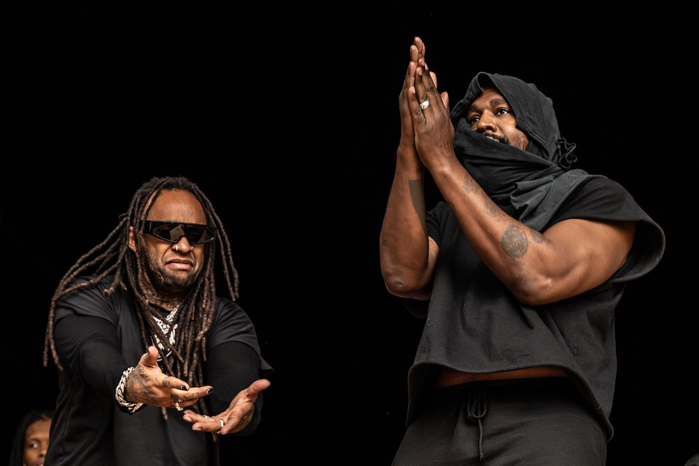
Kanye West и Ty Dolla $ign на презетации альбома Vultures
25 августа 2023 года сообщалось, что
Kanye находится в процессе записи своего одиннадцатого студийного альбома. 13 октября
Billboard сообщил, что
Kanye закончил запись совместного студийного альбома с
Ty Dolla $ign, подписал контракт и был в процессе продажи альбома дистрибьюторам, добавив, что первоначально альбом предназначался для официального релиза в тот же день, но в конечном итоге был отложен по неизвестным причинам и, как ожидается, выйдет в ближайшие недели. 23 октября,
Ty Dolla $ign объявил, что он и
Kanye проведут "мероприятие по прослушиванию на нескольких стадионах" 3 ноября для продвижения своего совместного проекта. 22 ноября 2023 года
Kanye и
Ty Dolla $ign выпустили песню "Vultures" с участием
Bump J.
10 февраля 2024 года, с опозданием на один день "Vultures" появляется на стриминговых сервисах, однако на
Spotify он выходит на день позже. Название альбома позже было изменено на "Vultures 1", которое подчеркивает, что данный релиз является первым томом альбома. Выход второго и третьего томов запланирован на 10 мая 2024 года и 30 сентября 2024 года.
Данный релиз стал третьим совместным альбомом
Kanye после Watch The Throne и Kids See Ghosts. Vultures 1 занял первую строчку в
ARIA Charts, став пятым альбомом
Kanye, который смог занять лидирующую позицию в австралийском чарте.
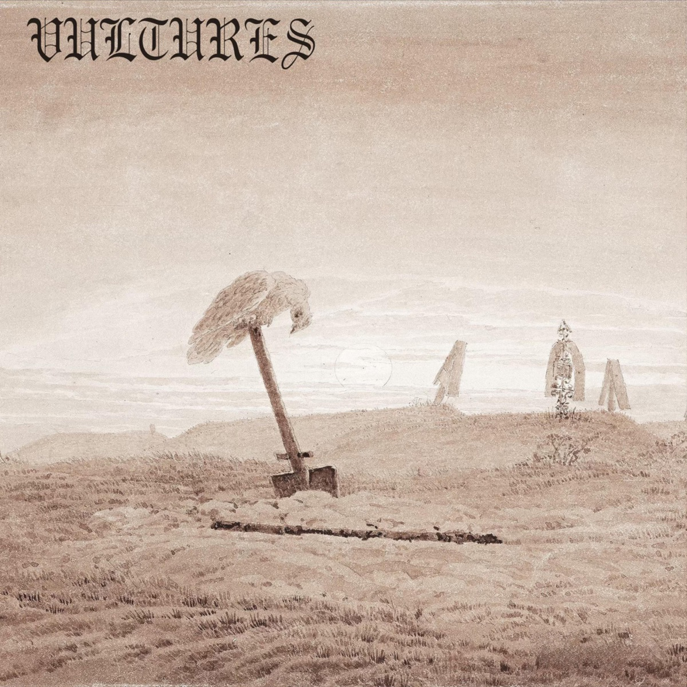
Обложка альбома Vultures
ㅤ
2. Личная жизнь
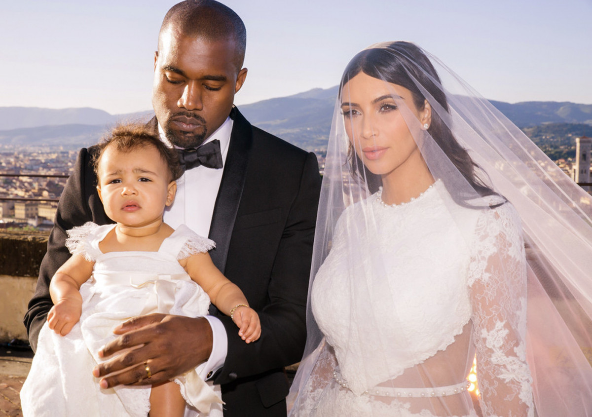
Kanye West и Kim Kardashian со своим первым ребёнком North West на церемонии во Флоренции
В 2002 году
Kanye начал встречаться с модным дизайнером
Алексис Файфер и даже собирался отвести ее к алтарю. Но дело до свадьбы так и не дошло, и через полтора года влюбленные расстались. С 2008 по 2010-й
West был в отношениях с моделью
Эмбер Роуз.
В 2012 году
Kanye начал встречаться со звездой реалити-шоу и моделью
Ким Кардашьян, с которой он был знаком более пяти лет. 31 октября 2013 года, на 33-й день рождения
Ким,
Kanye сделал ей предложение на стадионе
AT&T-парк в Сан-Франциско.
В июне 2013 года у
Kanye West и звезды телевизионных шоу и фотомодели
Ким Кардашьян родился первый ребёнок, Норт. В октябре
Kanye и
Кардашьян объявили о помолвке, что привлекло внимание СМИ.
В мае 2014 года
Kanye и
Кардашьян поженились во Флоренции, на закрытую церемонию было приглашено большое количество артистов и знаменитостей.
У
Kanye и
Ким четверо детей: дочка North West, сын Saint West, дочка Chicago West и сын Psalm West.
В феврале 2021 года
Ким заявила, что подаёт на развод. Расставание обошлось без конфликтов, супруги сумели разделить имущество и опеку над детьми.
Диск был номинирован на
«Грэмми»
в категории «Альбом года» и победил в номинациях: «Лучший рэп-альбом» и «Лучшая рэп-песня» за сингл
Jesus Walks
в 2005 году, также альбом был номинирован и на премию
American Music Awards
в 2004 году в номинации «Лучший рэп/хип-хоп альбом». Журнал
Rolling Stone
назвал его альбомом года, в журнале
Spin
он занял первое место в рейтинге «40 лучших альбомов года». Кроме того, альбом получил на редкость высокую оценку от журнала
The Source
- 4,5 микрофона. Все песни с альбома были спродюсированы самим
Kanye.
Для человека о котором почти никто не знал это были безумно высокие результаты.
Запись альбома проводилась в течение года на различных студиях в
Нью-Йорке
и
Голливуде.
Во время записи
Kanye
сотрудничал с продюсером
Джоном Брайоном.
Альбом дебютировал на первой строке
Billboard 200,
продавшись в первую неделю количеством 860 000 копий. Всего в
США
было продано 3 миллиона копий. После выпуска альбом
Late Registration
получил признание большинства музыкальных критиков и позволил получить
Kanye
несколько наград, среди которых премия
«Грэмми»
за «Лучший рэп-альбом». Журнал
Rolling Stone,
назвавший
Late Registration
лучшим альбомом 2005 года, расположил альбом на 40-м месте в списке лучших альбомов 2000-х.
Запись длилась около двух лет и проходила в разных студиях в
США.
Обложку для альбома оформил японский иллюстратор
Такаси Мураками.
Альбом дебютировал под первым номером в
US Billboard 200.
Продажи в первую неделю составили 957 000 копий.
50 Cent
выпустил свой альбом
«Curtis»
в этот же день. Такое событие вызвало большой ажиотаж среди музыкального общества. Конкуренция, привела к хорошим продажам обоих альбомов.
«Graduation»
получил в целом положительные отзывы от большинства музыкальных критиков и получил
«Грэмми»
в номинации «Лучший рэп-альбом», в том числе и первую награду от премии
American Music Awards
2008 года в номинации «Лучший рэп/хип-хоп альбом». Альбом был продан в размере 2 166 000 копий в
США
и был сертифицирован дважды платиновым.
Сам
Kanye
квалифицирует жанр альбома как
поп,
но
808s & Heartbreak
содержит также элементы жанров
синти-поп,
R&B
и
электропоп,
а в большинстве треков альбома
Kanye
поёт, в отличие от предыдущих альбомов. В песнях затрагиваются лирические темы, такие как любовь и одиночество. Также в альбоме широко используется эффект
Auto-Tune
и драм-машина
Roland TR-808,
что делает звук
электронным.
Альбом выполнен в стиле
минимализма,
а его звучание отличается от привычного звучания
хип-хопа.
В продюсировании альбома принимали участие такие продюсеры, как
No I.D.,
Jeff Bhasker
и другие. В записи песен также участвовали
Kid Cudi,
Young Jeezy,
Mr Hudson
и
Lil Wayne.
Альбом дебютировал под первым номером в чарте
Billboard 200,
с 450 145 проданных копий в первую неделю. В 2009 году журнал
Rolling Stone
поставил этот альбом на 63 место в списке самых продаваемых альбомов 2000-х годов.
После выпуска альбома
Graduation,
оставшаяся часть года и весь следующий были для
Kanye
полны эмоциональных потрясений. 10 ноября 2007 года умирает его мать, Donda West, в результате осложнений в ходе хирургической операции. Спустя несколько месяцев,
Kanye
расстался со своей невестой
Алексис Фифер.
В то же время, Ye пытался приспособиться к новому для него статусу звезды, к которому он когда-то стремился. Утраты, одиночество и тоска по дружескому общению и ощущению нормальной жизни послужили вдохновением при создании концепции
808s & Heartbreak.
Kanye
решил, что чувства, которые были в его сердце, невозможно передать через
рэп.
Он сменил жанр альбома на
поп.
После выхода альбома большая часть фанатов посчитали этот альбом самым слабым в дискографии
Kanye West
. Они не ожидали, что спустя 10 лет, благодаря именно этому альбому
Auto-Tune
и
808-ой вид басса
станут популярными, и что этот альбом навсегла изменит звук современного
хип-хопа.
Альбом занял лидирующие строчки в музыкальных чартах 23 стран мира одновременно, дебютировал на первой строке
Billboard 200, продавшись в первую неделю количеством 436 000 копий, таким образом альбом в то же время занял лидирующие позиции в 8 категориях чарта
Billboard. Альбом поставил рекорд по продажам за всю историю существования
iTunes Store - за неделю он разошёлся тиражом в 290 000 копий. В сентябре 2011 года пластинка получила статус платиновой.
Aльбом-компиляция треков, исполненных участниками лейбла
G.O.O.D. Music, главой которого является
Kanye West. Планы по созданию этого альбома впервые прозвучали в октябре 2011 года. Окончательная дата релиза пришлась на 14 сентября 2012 года.
Все четыре сингла, выпущенные с этого альбома («Mercy», «Cold», «New God Flow» и «Clique»), попали в чарт
Billboard Hot 100.
Впервые информацию о готовящемся альбоме
Kanye West объявил в октябре 2011 года через свой
твиттер.
Шестой студийный альбом Kanye West под названием "Yeezus".
Kanye West приступил к записи шестого студийного альбома в середине 2012 года с коллегами по лейблу
G.O.O.D. Music -
DJ Khaled и
No I.D. Первые семплы и музыкальные заготовки
Kanye записывал в личном номере некой парижской гостиницы, которую нарёк в буклете к альбому безымянной.
Kanye также снял чердак гостиницы, где подбирал материал для альбома. Из-за плохой акустики
Kanye прослушивал созданные композиции несколько раз, что добавило альбому жёсткости и агрессивности.
При создании инструменталов было привлечено множество соучастников, возглавляемых
Kanye, в числе которых, в частности:
Майк Дин,
Рик Рубин,
Metro Boomin и
Хадсон Мохоук. Звукозаписывающие сессии для альбома проводились в различных локациях по миру начиная с Италии, Мексики и заканчивая Торонто, Нью-Йорком и Лос-Анджелесом.
Изначально предполагалось, что альбом будет продаваться эксклюзивно через
Tidal одну неделю, после чего он станет доступен для всех популярных платформ. Однако позже, через 2 дня после релиза,
Kanye West заявил в
твиттере, что альбом будет продаваться только через
Tidal и после окончания первой недели. На следующий день стало известно, что альбом был скачан более 500 000 раз с различных
торрент-трекеров и что по количеству сидеров на трекере
The Pirate Bay он обогнал альбом
Rihanna -
Anti более чем в три раза.
Восьмой сольный студийный альбом Kanye под названием "ye".
Kanye West сравнялся с
Eminem по числу лидеров чарта среди хип-хоп-исполнителей и уступает лишь
Jay-Z. Вместе с
Eminem и
The Beatles, они единственные музыканты, у которых восемь подряд альбомов занимали первые места в
США.
Альбом посвящен христианской тематике.
Kanye West сформировал свою группу воскресного служения в январе 2019 года, исполняя евангельские песни и каверы песен из своей дискографии.
12 января 2022 года
Moneybagg Yo поделился перепиской между ним и
Kanye, которые подтвердили причастность первого к Donda 2. Двумя днями позже модель Трейси Миллс опубликовала видео в
Instagram, в котором
Ye записывался с
A$AP Rocky,
The Game и
Pusha T. В нём также были замечены продюсеры
Майк Дин и
DJ Premier. 22 января
Kanye вылетел в Майами, чтобы записаться с продюсером
DJ Khaled.
Donda 2 не мог попасть в чарты
Billboard, поскольку он недоступен отдельно от покупки одного из устройств
Stem Player. 4 марта 2022 года
Billboard утверждал, что прикрепление нового альбома к физическому устройству считается «комплектацией» — практика, которую организация сочла недействительной в 2020 году и ввела правило, запрещающее считать такую тактику продажами пластинок.
Дебютный студийный альбом Kanye West, совместный с Ty Dolla $ign под названием "Vultures 1".
Альбом является продолжением альбомов обоих артистов 2021 года, Donda и
Cheers to the Best Memories. Альбом предзнаменовали тремя презентациями, одна из них была в Чикаго, родном городе
Уэста, 15 декабря 2023 года.
Обложка для Vultures была сделана с помощью картины 1835 года
Каспара Давида Фридриха «Пейзаж с могилами»
ㅤ
ㅤ
4. Музыкальные стили
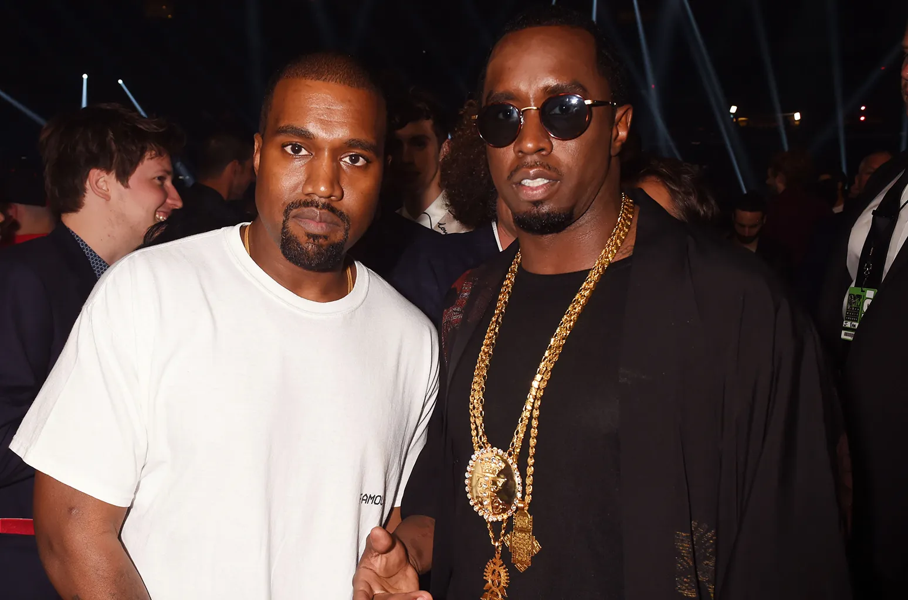
Kanye West и Puff Daddy на совместной фотографии
За время своей карьеры
Kanye перепробовал множество различных музыкальных стилей и жанров. На вопрос о том, кто оказал влияние на его раннее творчество,
Kanye назвал таких артистов, как
Стиви Уандер,
Майкл Джексон,
Джордж Майкл,
Puff Daddy и
Дэвида Боуи.
Он назвал
Puff Daddy «один из важнейших культурным деятелем» в своей жизни.
Будучи подростком,
Kanye познакомился с продюсером
No I.D., который стал его наставником.
No I.D. впускал
Kanye к себе на студию, где он мог наблюдать за ходом работы. Первым музыкальным стилем, использованным
Kanye, стал так называемый «бурундучий соул». Данная техника основана на использовании значительно ускоренных сэмплов классических соул-композиций, что делает звук более высоким. По словам
Ye, он позаимствовал данный стиль у
RZA из группы
Wu-Tang Clan, использовавшего его в 1990-х годах. Этот стиль получил известность после выхода альбома
The Blueprint, продюсером которого стал
Kanye. Позже он развил его в своём дебютном альбоме,
The College Dropout.
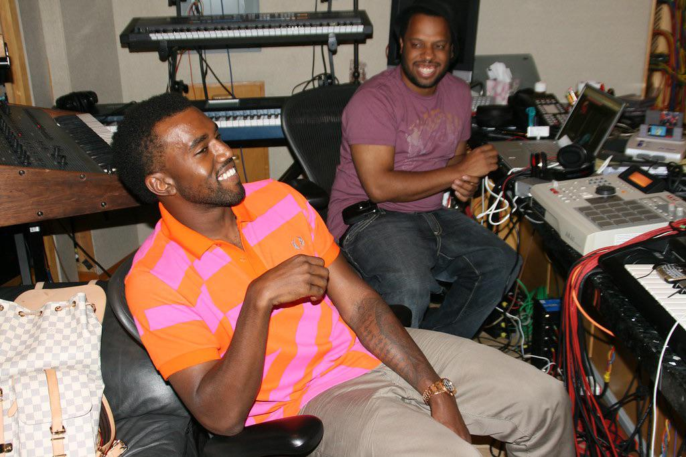
Kanye West и No I.D. на студии
На Late Registration
Ye объединил свой хип-хоп на основе соула с живой оркестровой музыкой
Джона Брайона. Он также использовал различные перкуссионные инструменты, обычно не используемые в популярной или хип-хоп-музыке. Долгое время
Kanye был единственным популярным исполнителем, гастролировавшим со струнным оркестром.
В своём третьем альбоме, Graduation,
West отошёл от привычного соула. Альбом включал в себя элементы разнообразных жанров, среди которых электро, диско, рок-музыка и чикагский хаус.
Четвёртый альбом
Kanye, 808s & Heartbreak, разительно отличался от его предыдущих работ. На нём он решил отойти от хип-хопа в сторону электропопа и синти-попа. При создании альбом широко использовалась драм-машина
Roland TR-808, автотюн и программные синтезаторы.
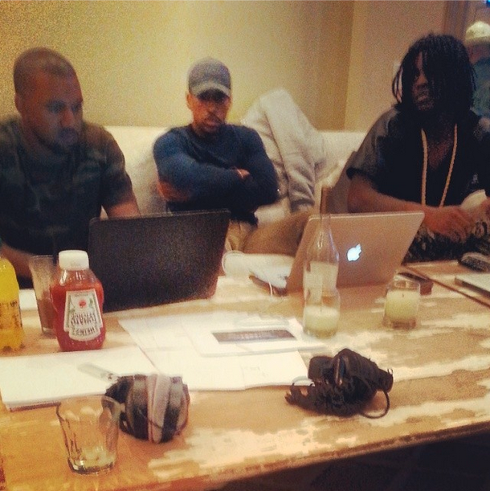
Kanye West и Chief Keef на звукозаписывающей студии в Париже
В своём пятом альбоме, My Beautiful Dark Twisted Fantasy,
Kanye вернулся к хип-хопу. MBDTF включает в себя элементы всех предыдущих альбомов.
Шестой альбом, Yeezus, названный
Kanye «протестом против музыки», был исполнен в резком стиле, основанном на различных жанрах. Альбом сочетает в себе элементы эйсид-хауса 80-х, чикагского дрилла 2013 года в стиле
Chief Keef и
King Louie, индастриала 90-х и экспериментального хип-хопа в стиле
Saul Williams,
Death Grips и
Odd Future. В числе жанров, элементы которых представлены в альбоме, также называются трэп, панк-рок и электро.
Kanye использовал искажённые звуки драм-машин и синтезаторов. Композиции альбома стилизованы под повреждённые звуковые файлы, а вокальная часть изменена автотюном и эффектами модуляции.
ㅤ
5. Награды
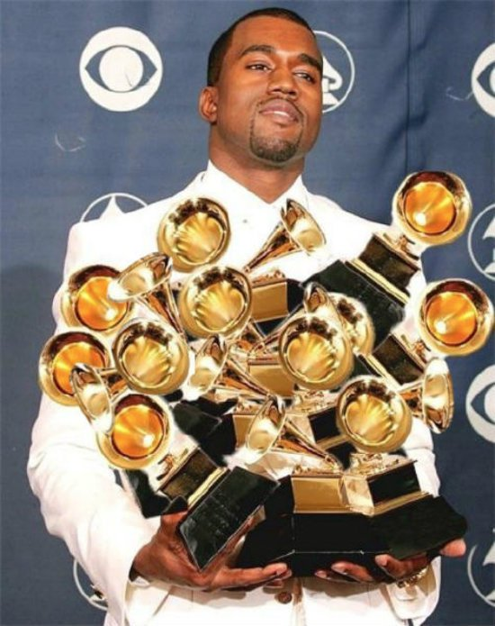
Kanye West с 21-й статуэткой на церемонии «Грэмми»
Kanye West является одним из самых продаваемых артистов, суммарный объём продаж его альбомов и синглов в цифровом формате и на физических носителях превысил 121 миллион экземпляров. Первые шесть альбомов
Kanye, все из которых стали платиновыми, получили многочисленные награды и признание критиков. Все его альбомы стали коммерчески успешными: The Life of Pablo стал шестым альбомом подряд, поднявшимся на первую строчку чарта
Billboard 200. Благодаря этому
Kanye занял третье место по числу цифровых продаж в 2000-х. Всего по состоянию на 2012 год продажи песен
Kanye через цифровую дистрибуцию в США достигли 30 миллионов, что позволило ему войти в десятку самых продаваемых музыкантов по цифровым продажам.
По состоянию на 2016 год
Ye получил 57 номинаций на премию «Грэмми», из которых он победил в 21, благодаря чему он является одним из рекордсменов по числу выигранных номинаций и рекордсменом среди хип-хоп-музыкантов. В 2008 году
MTV поместил
Kanye на первое место в своём ежегодном списке лучших рэперов.
Billboard поместил его на третье место в списке 10 лучших хип-хоп-продюсеров 2000-х и на 15-е место в списке лучших музыкантов десятилетия. Наравне с
Бобом Диланом он лидирует по числу первых мест в ежегодном рейтинге музыкальных критиков
Pazz & Jop, оба занимали данную позицию четыре раза.
Kanye West был дважды представлен в ежегодном списке 100 самых влиятельных людей мира по версии журнала
Time и несколько раз — в различных списках журнала
Forbes.
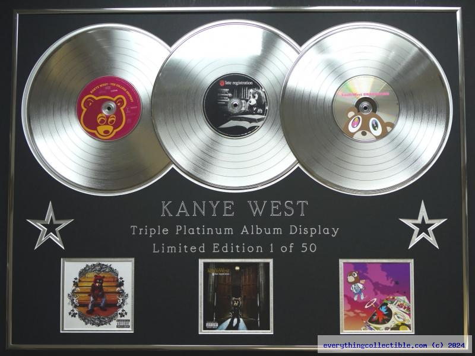
Награда за 3 платиновых альбома
Rolling Stone в своём списке 500 величайших альбомов всех времён 2012 года отметил три альбома
Kanye: My Beautiful Dark Twisted Fantasy был помещён на 353-ю строчку, The College Dropout — на 298-ю, а Late Registration — на 118-ю.
Журнал NME выпустил в 2013 году подобный список, в котором также отметил три альбома рэпера: Graduation занял 470-ю позицию, The College Dropout — 273-ю, а My Beautiful Dark Twisted Fantasy — 21-ю.
Pitchfork назвал My Beautiful Dark Twisted Fantasy лучшим альбомом, среди выпущенных с 2010 по 2014 год. Yeezus занял в том же списке восьмое место.
Pitchfork также выпустил список лучших композиций, вышедших с 2010 по 2014 год, в котором были представлены пять композиций
Kanye: «Blood on the Leaves» на 76-й позиции, «New Slaves» на 51-й, «Niggas in Paris» на 36-й, «Monster» на 18-й и «Runaway» на третьей.
ㅤ
6. Клипы
Клипы
Kanye West отличаются оригинальностью, художественным подходом и часто вызывают широкий общественный интерес.
В его клипах очень хорошо сочетаются музыка, мода, танцы и визуальные эффекты. Он известен своими амбициозными и креативными подходами к созданию видео, которые часто становятся объектом обсуждений.
В его клипах можно увидеть разнообразные темы, начиная от социальных комментариев и политических заявлений до футуристических концепций и экспериментов с визуальными эффектами.
West стремится к инновациям и постоянно ищет новые способы выразить свое видение через музыку и видео.
Он сотрудничает с талантливыми режиссерами и художниками, чтобы создавать уникальные и запоминающиеся клипы, которые не только дополняют его музыку, но и расширяют ее визуальное воздействие. Каждый новый клип
Kanye West вызывает интерес у поклонников и критиков, став объектом обсуждения в мире музыки и культуры.
Список самых популярных по просмотрам клипов Kanye West:
ㅤ
Kanye West - Stronger
Проcмотры: 470 785 826
Дата выпуска: 17 июн. 2009 года
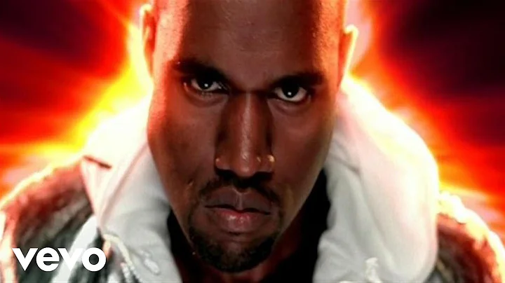
ㅤ
Jay-Z & Kanye West - Niggas In Paris
Проcмотры: 411 616 381
Дата выпуска: 9 февр. 2012 года
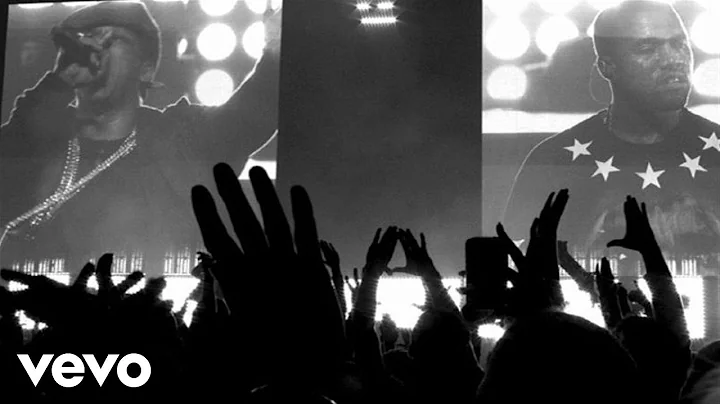
ㅤ
Kanye West ft. Jamie Foxx - Gold Digger
Проcмотры: 354 161 861
Дата выпуска: 17 июн. 2009 года
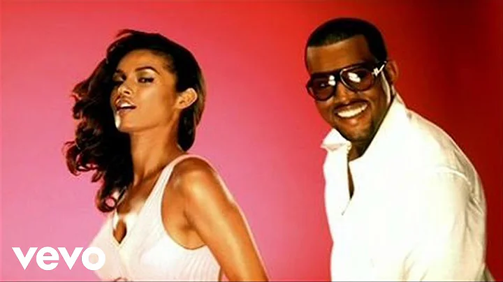
ㅤ
Kanye West ft. Rihanna, Kid Cudi - All Of The Lights
Проcмотры: 302 769 483
Дата выпуска: 19 февр. 2011 года
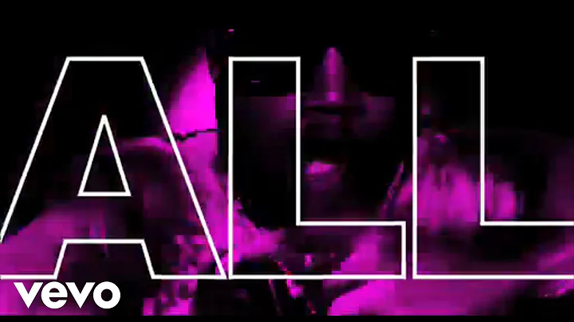
ㅤ
Kanye West ft. Big Sean, Pusha T, 2 Chainz - Mercy
Проcмотры: 283 896 622
Дата выпуска: 6 июн. 2012 года
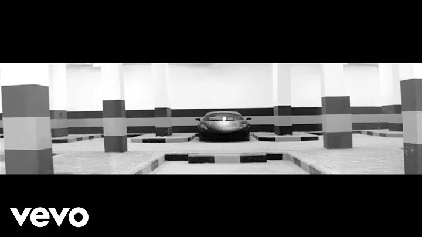
ㅤ
JAY Z & Kanye West ft. Otis Redding - Otis
Проcмотры: 240 869 524
Дата выпуска: 12 авг. 2011 года
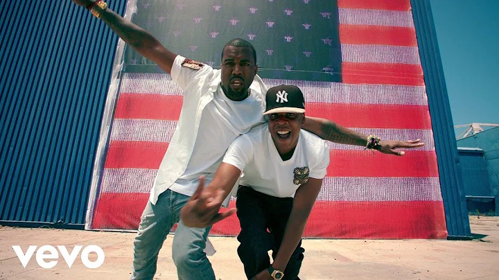
ㅤ
Kanye West - Heartless
Проcмотры: 219 501 903
Дата выпуска: 17 июн. 2009 года
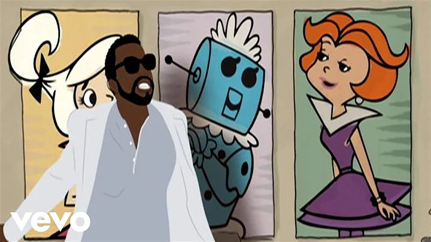
ㅤ
Kanye West - POWER
Проcмотры: 146 255 442
Дата выпуска: 6 авг. 2010 года
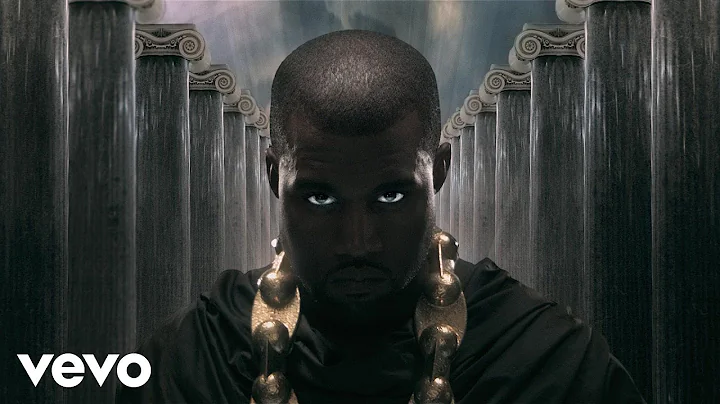
ㅤ
7. Одежда
Kanye West, помимо своей музыкальной карьеры, также известен как дизайнер. Его бренд
Yeezy, включающий в себя линию Yeezy Season, стал одним из самых популярных в индустрии моды.
Cвой путь в сфере моды
Kanye West начал, основав в 2005 году при содействии
Вирджила Абло бренд
Pastelle.
Kanye использовал модели собственного производства на музыкальных церемониях и модных показах, однако за четыре года существования марки релиз полноценной коллекции так и не состоялся. В 2009 бренд закрылся. В 2006 году
Kanye West разработал обувь для
Adidas, но она так и не была выпущена. Первым брендом, официально сотрудничавшим с
Kanye, был японский бренд
Bape.
Kanye West и
Bape выпустили пару кроссовок Bapesta College Dropout, которые сейчас довольно редки и имеют высокую цену перепродажи. Он также создавал обувь для
Louis Vuitton,
Giuseppe Zanotti и
Nike.
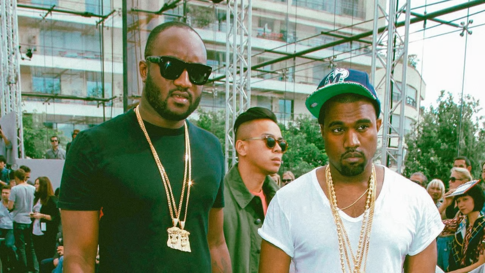
Virgil Abloh и Kanye West на показе моды бренда Fendi
3 декабря 2013 года компания
Adidas, но она так и не была выпущена. Первым брендом, официально сотрудничавшим с подтвердила сделку о сотрудничестве с
Kanye West.
Adidas согласился выплачивать Kanye роялти 15 % без учёта маркетингового сбора. Kanye описал генерального директора
Adidas как «человека, который позволил ему создавать». В рамках партнёрства с
Adidas,
Kanye сохраняет 100-процентную собственность на свой бренд, имея полный творческий контроль над выпускаемой продукцией.
Продукция
Yeezy выходила в рамках коллаборации с немецкой компанией
Adidas, производящей спортивную одежду. Сотрудничество стало известным благодаря высококлассным лимитированным сериям моделей кроссовок Yeezy Boost. В рамках сотрудничества также были выпущены футболки, куртки, спортивные штаны, носки и женские туфли.
Yeezy Season представляет собой коллекции одежды и обуви, созданные
Kanye. Он ставит акцент на минимализм, нейтральные цвета, оверсайз силуэты и инновационные ткани. Коллекции Yeezy Season часто отражают уличную моду и внедряют элементы спортивного стиля.
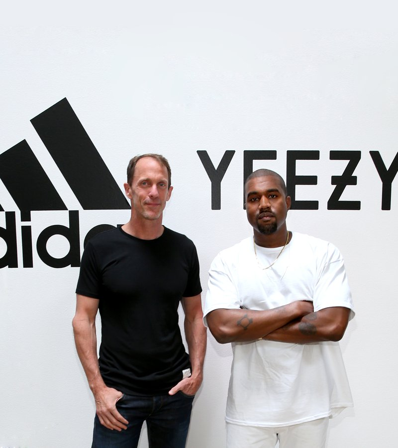
Kanye West и директор Adidas
В 2020 году
Kanye West объявил о партнерстве с американским ритейлером
GAP для создания линии одежды Yeezy Gap. Эта коллаборация призвана сделать модные изделия от
Kanye доступными для более широкой аудитории по более доступной цене.
Kanye West также сотрудничал с известным брендом
Balenciaga. В 2021 году он представил коллаборацию с
Balenciaga на благотворительном аукционе для помощи жертвам голода в Африке.
Kanye West известен своим стремлением к инновациям и экспериментам в области моды. Он часто использует новаторские материалы и технологии, чтобы создавать уникальные и современные дизайны, которые отличаются от традиционных стандартов модной индустрии.
Kanye West играет значительную роль в мире моды, продвигая свой уникальный стиль и внося свой вклад в инновации и трансформации индустрии.
ㅤ
8. Концерты
Kanye West славится своими энергичными и запоминающимися концертами. Его выступления часто сопровождаются великолепным шоу, включающим в себя инновационные сценические решения, визуальные эффекты и запоминающиеся костюмы.
Концерты Ye являются масштабными и зрелищными мероприятиями, на которых он исполняет свои хиты перед огромной аудиторией поклонников. Его выступления известны своей динамикой, эмоциональностью и нестандартным подходом к шоу-бизнесу.
Кроме того, Kanye также известен своими необычными и иногда провокационными заявлениями на сцене, что делает его концерты еще более запоминающимися для публики.
Концерт
Kanye West "Glow in the Dark" Tour, который проходил в 2008 году, считается одним из наиболее запоминающихся и инновационных шоу в истории хип-хопа. Этот тур был уникален не только своим музыкальным содержанием, но и постановкой, визуальными эффектами и атмосферой.
"Glow in the Dark" Tour был построен вокруг концепции космического путешествия, где
Kanye представлял себя в роли космического путешественника. Сцена была оформлена в стиле научной фантастики, с футуристическими элементами и визуальными эффектами.
Каждое выступление было похоже на кинематографическое приключение, с живописными видеорядами, освещением и костюмами.
Kanye исполнял хиты со своих альбомов под аккомпанемент живых инструментов и электронной музыки.
Одним из ключевых моментов концерта было использование светящихся элементов и спецэффектов, что придало шоу неповторимый вид и создало атмосферу магии и футуризма.
"Glow in the Dark" Tour получил множество положительных отзывов от критиков и поклонников музыки за свою оригинальность, техническое исполнение и визуальное оформление. Этот концерт стал одним из самых ярких моментов в карьере
Kanye West и оставил незабываемые впечатления у всех, кто имел удовольствие посетить его.
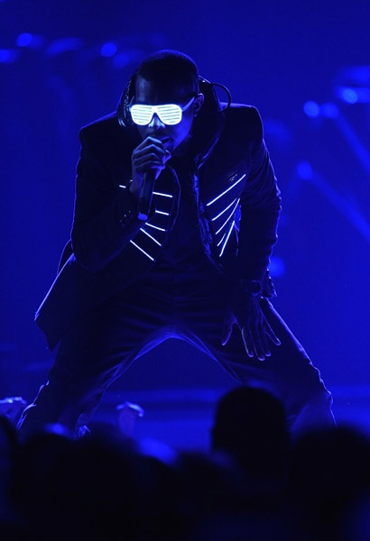
Kanye West на выступлении в 2008 году
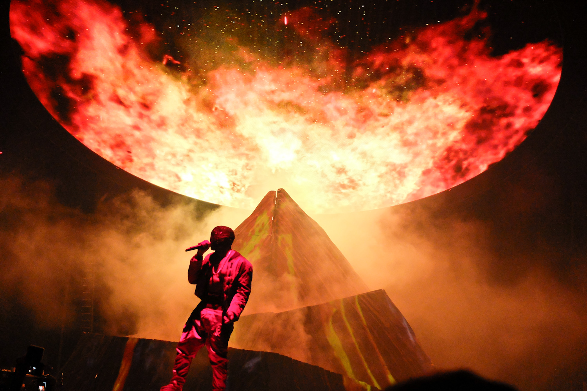
Kanye West на выступлении "Yeezus Tour"
Один из самых запоминающихся концертов
Kanye West состоялся в 2013 году на фестивале
Governors Ball в Нью-Йорке. Это выступление было особенно впечатляющим благодаря инновационному подходу к сценическому шоу и неожиданным художественным элементам.
На этом концерте
Kanye West представил свой альбом "Yeezus" и поразил публику не только музыкой, но и визуальным исполнением. Сцена, использовавшаяся во время тура, сильно напоминала модный подиум.
Maison Martin Margiela и
West вместе работали над созданием модных вещей и нарядов для тура. Одной из основных особенностей выступления стала гора высотой 50 футов, которая могла изменить свой внешний вид на вид вулкана. Подножие горы затем ведет на второстепенную сцену, которая поднимается к заостренной главной сцене, которая также была моторизована. Над горой был установлен круглый светодиодный экран шириной 18 метров и специальная звуковая система.
Концерт
Kanye West на
Governors Ball 2013 года остался в памяти многих зрителей как одно из самых ярких и инновационных выступлений
Kanye.
Концерт
Kanye West на подвешенной сцене в рамках тура "The Life of Pablo" в 2016 году был одним из самых инновационных и запоминающихся выступлений артиста. Этот тур был направлен на продвижение его альбома "The Life of Pablo" и проходил в различных городах по всему миру.
Одним из ключевых элементов этого тура была сцена, которая была подвешена над зрителями. Это создавало ощущение, что
Kanye парит над публикой, что добавляло драматизма и уникальности его выступлениям. Подвешенная сцена позволяла
Kanye перемещаться по всему стадиону, взаимодействовать с аудиторией и создавать неповторимую атмосферу близости с фанатами.
Визуальная составляющая концерта также была впечатляющей: использовались различные световые эффекты, видеопроекции и художественные элементы, чтобы подчеркнуть музыку и атмосферу выступления.
Тур "The Life of Pablo" с подвешенной сценой был не только музыкальным событием, но и техническим и художественным шедевром, который продемонстрировал творческий подход
Kanye West к созданию живого шоу и взаимодействию с публикой.
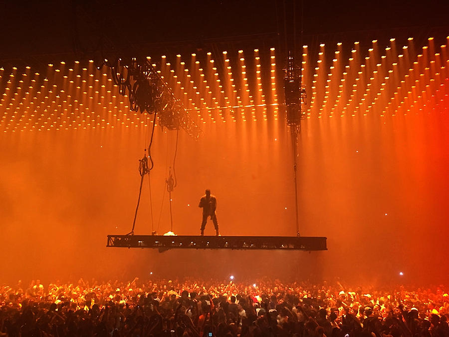
Kanye West в рамках тура "The Life of Pablo"
Перформанс
Kanye West с треком «All Day» на церемонии вручения премии
BRIT Awards в 2015 году:
Kanye позвонил
Скепте посреди ночи и попросил его приехать на церемонию в сопровождении 100 людей в чёрной одежде. Во время выступления выключили освещение, и единственным источником света были два гигантских огнемёта.
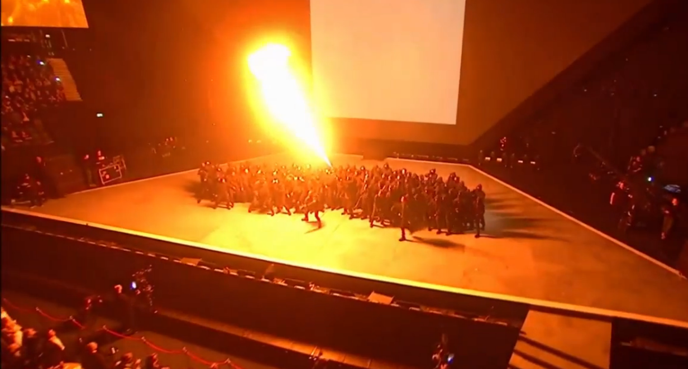
Kanye West на церемонии "BRIT Awards"
ㅤ
9. Лейблы
Kanye West сотрудничал с несколькими известными лейблами в течение своей карьеры.
Roc Nation:
Kanye West не является официально подписанным артистом
Roc Nation, он имеет связи с этим лейблом через свои коллаборации с
Jay-Z и другими артистами, которые находятся под лейблом
Roc Nation.
YZY: бренд и лейбл, основанный самим
Kanye West. Он использует этот лейбл для выпуска своих собственных коллекций одежды, обуви и других товаров, демонстрируя свой талант не только в музыке, но и в мире моды.